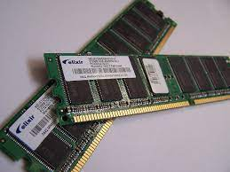

หน่วยความจำ คือ อุปกรณ์เก็บสถานะข้อมูลและชุดคำสั่ง เพื่อการประมวลผลของคอมพิวเตอร์
หน่วยความจำแบ่งได้เป็นสองประเภทใหญ่ ๆ คือ หน่วยความจำถาวร และ หน่วยความจำชั่วคราว ตัวอย่างของหน่วยความจำถาวรก็เช่น หน่วยความจำแบบแฟลช และหน่วยความจำพวกรอม ตัวอย่างของหน่วยความจำชั่วคราวก็คือพวกหน่วยความจำหลัก เช่น DRAM (แรมชนิดที่นิยมใช้ในปัจจุบัน) และแคชของซีพียูซึ่งทำงานได้รวดเร็วมาก (ปกติเป็นแบบ SRAM ซึ่งเร็วกว่า กินไฟน้อยกว่า แต่มีความจุต่อพื้นที่น้อยกว่า DRAM[1])
หน่วยความจำภายนอก (external memory) หมายถึง สื่อต่าง ๆ ที่ใช้เป็นตัวเก็บข้อมูลเพิ่มจากหน่วยความจำหลัก (main memory) เพราะหน่วยความจำหลักในคอมพิวเตอร์นั้นไม่มีพื้นที่พอจะเก็บข้อมูลจำนวนมากไว้พร้อมกันได้หมด (เนื่องจากราคาต่อพื้นที่สูง) เพื่อช่วยประหยัดเราจึงเก็บข้อมูลไว้ในหน่วยความจำรอง (เช่น จานบันทึกแบบแข็ง) นี้ก่อน เพราะราคาต่อพื้นที่ถูกกว่ามากและสามารถเก็บข้อมูลได้ถาวร แล้วจึงดึงข้อมูลไปไว้ในหน่วยความจำหลักเฉพาะเมื่อเวลาต้องการเรียกใช้เท่านั้น
